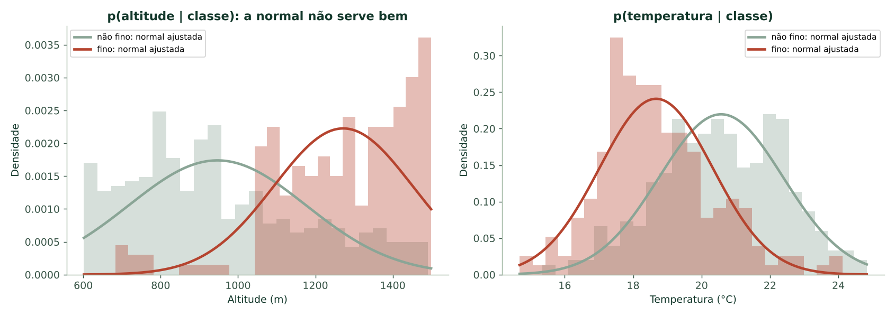
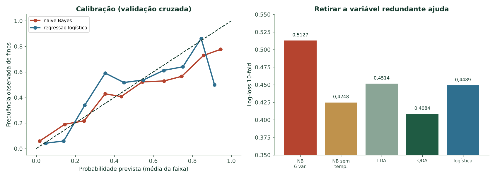

Naive Bayes
Teorema de Bayes com variáveis supostas independentes dentro de cada classe — rápido e bom para decidir, confiante demais nas probabilidades.
Comece por aqui
O naive Bayes aplica o teorema de Bayes com uma simplificação drástica: supõe que, dentro de cada classe, as variáveis são independentes. Com isso, a densidade conjunta de seis variáveis vira o produto de seis densidades de uma variável, cada uma estimada separadamente. O modelo tem poucos parâmetros, ajusta instantaneamente e funciona com muitas variáveis e poucos dados.
A hipótese de independência quase nunca é verdadeira, e mesmo assim o naive Bayes classifica bem com frequência. Domingos e Pazzani (1997) explicaram por quê: para classificar, basta que a classe certa tenha a maior probabilidade, mesmo que o valor esteja errado. O preço aparece nas probabilidades: com variáveis redundantes, a evidência é contada duas vezes, e o modelo fica confiante demais. Esta ficha mede esse preço.
O que é o naive Bayes
Pelo teorema de Bayes, \(P(C=c\mid x)\propto \pi_c\,p(x\mid C=c)\). O naive Bayes troca a densidade conjunta \(p(x\mid c)\) pelo produto das marginais. Na versão gaussiana, cada marginal é uma normal com média e desvio-padrão próprios da classe; na versão com núcleo, uma densidade suave estimada dos dados; para contagens de palavras, uma multinomial.

| Aspecto | Naive Bayes gaussiano | LDA | QDA |
|---|---|---|---|
| Covariâncias | Diagonais, por classe | Uma comum, completa | Uma por classe, completas |
| Correlação entre variáveis | Ignorada | Modelada | Modelada |
| Parâmetros (p = 6, 2 classes) | 24 + 1 | 12 + 21 + 1 | 12 + 42 + 1 |
| Fronteira | Quadrática (com eixos alinhados) | Linear | Quadrática |
Pressupostos e como verificá-los
| Pressuposto | Por que importa | Como verificar |
|---|---|---|
| Independência condicional à classe | Variáveis correlacionadas contam a mesma evidência duas vezes. | Correlações dentro de cada classe. |
| Forma de cada densidade | A gaussiana supõe normalidade por classe. | Histogramas por classe; versão com núcleo. |
| Nenhuma densidade nula | Uma categoria ausente numa classe zera o produto. | Correção de Laplace (laplace = 1). |
| Prioris adequadas | Afetam as probabilidades a posteriori. | Use a prevalência da população-alvo. |
Formulação e cálculo
Em que:
- \(\pi_c\)
- probabilidade a priori da classe \(c\): a proporção no treino
- \(f_{jc}\)
- densidade da variável \(j\) na classe \(c\)
- \(\bar x_{jc},\ s_{jc}\)
- média e desvio-padrão da variável \(j\) na classe \(c\)
Na prática calcula-se em logaritmos — uma soma em vez de um produto, o que evita números pequenos demais:
Cada variável contribui com um termo aditivo no logito: é a forma explícita da independência.
Exemplo numérico, passo a passo
| Variável | Média (fino) | DP (fino) | Média (não) | DP (não) |
|---|---|---|---|---|
| Altitude | 1272,08 | 179,19 | 946,75 | 229,32 |
| Temperatura | 18,67 | 1,66 | 20,57 | 1,82 |
| Chuva | 1484,35 | 241,15 | 1522,74 | 269,96 |
| Sombreamento | 27,93 | 19,55 | 28,32 | 19,46 |
| N foliar | 2,87 | 0,39 | 2,82 | 0,41 |
| pH | 5,44 | 0,36 | 5,40 | 0,50 |
Para o lote com altitude 1.080 m, 20,0 °C, 1.500 mm, 30% de sombra, N 2,9 e pH 5,4, com prioris 0,34 e 0,66:
| Variável | Densidade | fino | Densidade | não | Log da razão |
|---|---|---|---|
| Altitude | 1,2534 × 10⁻³ | 1,4694 × 10⁻³ | −0,1590 |
| Temperatura | 0,1746 | 0,2091 | −0,1800 |
| Chuva | 1,6509 × 10⁻³ | 1,4725 × 10⁻³ | 0,1143 |
| Sombreamento | 0,0203 | 0,0204 | −0,0063 |
| N foliar | 1,0121 | 0,9583 | 0,0545 |
| pH | 1,0957 | 0,8016 | 0,3125 |
Somando os logaritmos com os das prioris, obtém-se −19,7064 para "fino" e −19,1792 para "não"; logo \(P(\text{fino}\mid x)=1/(1+e^{0{,}5272})=0{,}3712\), idêntico ao do GaussianNB. A probabilidade verdadeira é 0,6221.
O erro tem duas origens visíveis na tabela. A altitude de 1.080 m, logo acima do degrau, recebe razão negativa (−0,1590): a normal dos finos, centrada em 1.272 m, acha 1.080 m "baixo", sem saber que tudo acima de 1.050 m é favorável. E a temperatura de 20,0 °C acrescenta −0,1800 — mas boa parte dessa informação já estava na altitude, com a qual a temperatura tem correlação −0,723 dentro dos finos. A mesma evidência foi contada duas vezes.
Propriedades
- Número de parâmetros linear em p: funciona com p grande e n pequeno.
- Ajuste em uma passada pelos dados, sem otimização.
- Com variáveis redundantes, as probabilidades ficam extremas demais.
- A classificação pode ser boa mesmo com probabilidades ruins.
- O logito é aditivo nas variáveis: não há interações.
- A versão gaussiana tem fronteira quadrática; a multinomial, linear.
Como interpretar os resultados
| Elemento | O que informa | Cuidado |
|---|---|---|
| Tabelas de média e desvio | Como cada variável difere entre as classes. | Uma a uma, sem ajuste pelas outras. |
| Log da razão de cada variável | Quanto ela empurra a decisão. | Variáveis redundantes somam a mesma coisa. |
| Probabilidade a posteriori | Confiança na classe. | Costuma ser extrema demais; calibre. |
| Erro de classificação | Desempenho para decidir. | Pode ser bom com probabilidades ruins. |
Como executar no R e em Python
Onde executar o código em Python
Não é preciso instalar nada: o Google Colab é um computador na nuvem, gratuito, que executa Python pelo navegador e já traz as bibliotecas usadas aqui (numpy, scipy e matplotlib).
naiveBayes(), do pacote e1071: para variáveis numéricas, ajusta uma normal por classe; para fatores, tabelas de frequência, com correção de Laplace em laplace. predict(…, type = "raw") dá as probabilidades. O pacote naivebayes acrescenta densidades por núcleo (usekernel = TRUE), Poisson e gráficos das densidades. Em Python, sklearn.naive_bayes.GaussianNB, MultinomialNB e BernoulliNB.
library(e1071)
nb <- naiveBayes(fino_f ~ alt + temp + chuva + somb + nfol + ph, data = cafe)
nb
predict(nb, cafe[1:5, ], type = "raw")
Exemplo de aplicação
Contexto dos dados
Os dados são fictícios e foram criados pelo autor: 600 lotes de café, cada um com a nota sensorial (escala SCA, de 70,0 a 86,1) e seis variáveis da lavoura — altitude (600 a 1.500 m), temperatura média (14 a 26 °C), chuva anual (mm), sombreamento (%), nitrogênio foliar (dag/kg) e pH do solo. Um lote é fino quando a nota é 80 ou mais (204 lotes, 34,0%). O processo gerador é conhecido e foi desenhado para ter as duas estruturas que os modelos aditivos não representam: um degrau de +4,6 pontos acima de 1.050 m de altitude e uma interação — o sombreamento melhora a nota quando a temperatura passa de 20,5 °C e a piora abaixo disso —, além de partes suaves em chuva, nitrogênio e pH e um erro de desvio-padrão 1,55. Altitude e temperatura têm correlação de −0,822, como na realidade. Como a verdade é conhecida, sabem-se os dois pisos: nenhum modelo de regressão pode ter erro quadrático esperado abaixo de \(\sigma^2=2{,}4025\), e nenhum classificador pode errar menos que o erro de Bayes, 0,1596. O mesmo conjunto atravessa as dez fichas dos grupos de árvores e de classificadores, o que permite comparar todos os métodos na mesma régua.
Código em R
# Naive Bayes: exemplo completo ----
# Pacotes: e1071 (naiveBayes) e naivebayes (opcional, com núcleo)
# Dados fictícios: 600 lotes de café (arquivo cafe.csv, pasta scripts/ do site).
# Baixe o arquivo para a pasta de trabalho, ou leia direto do endereço:
url <- "https://cassiushenrique.github.io/ModelosEstatisticos/scripts/cafe.csv"
cafe <- if (file.exists("cafe.csv")) read.csv("cafe.csv") else read.csv(url)
str(cafe) # nota, fino (0/1), alt, temp, chuva, somb, nfol, ph
cafe$fino_f <- factor(cafe$fino, levels = c(0, 1), labels = c("nao", "fino"))
table(cafe$fino_f)
library(e1071)
f <- fino_f ~ alt + temp + chuva + somb + nfol + ph
# ---- 1. O ajuste: uma média e um desvio-padrão por variável e por classe
nb <- naiveBayes(f, data = cafe)
nb # prioris e as tabelas de média e desvio por classe
# ---- 2. O cálculo para um lote novo
novo <- data.frame(alt = 1080, temp = 20.0, chuva = 1500, somb = 30, nfol = 2.9, ph = 5.4)
predict(nb, novo, type = "raw")
# À mão: produto das densidades normais vezes a priori
dens <- function(cl) prod(mapply(function(v, m, s) dnorm(novo[[v]], m, s),
names(novo), sapply(names(novo), function(v) nb$tables[[v]][cl, 1]),
sapply(names(novo), function(v) nb$tables[[v]][cl, 2]))) * nb$apriori[cl] / sum(nb$apriori)
dens("fino") / (dens("fino") + dens("nao"))
# (o e1071 usa o desvio-padrão com n-1; o scikit-learn, com n: diferença pequena)
# ---- 3. A hipótese "ingênua": correlação DENTRO de cada classe
by(cafe[, c("alt", "temp")], cafe$fino_f, cor)
# ---- 4. Calibração por validação cruzada
set.seed(1)
d <- sample(rep(1:10, length.out = nrow(cafe)))
p <- numeric(nrow(cafe))
for (j in 1:10) p[d == j] <- predict(naiveBayes(f, data = cafe[d != j, ]),
cafe[d == j, ], type = "raw")[, "fino"]
faixa <- cut(p, c(0, .05, .2, .4, .6, .8, .95, 1), include.lowest = TRUE)
cbind(previsto = tapply(p, faixa, mean), observado = tapply(cafe$fino, faixa, mean),
n = table(faixa))
# ---- 5. Sem a temperatura (redundante com a altitude)
nb2 <- naiveBayes(fino_f ~ alt + chuva + somb + nfol + ph, data = cafe)
# ---- 6. Densidades por núcleo em vez de normais
# install.packages("naivebayes")
library(naivebayes)
nbk <- naive_bayes(f, data = cafe, usekernel = TRUE)
plot(nbk, which = "alt")
A mesma análise em Python, com os resultados
Cole o código em um notebook do Google Colab ↗ e execute com Shift+Enter. Os valores abaixo são a saída desse código.
import numpy as np
# ------------------------------------------------------------------
# Bloco comum às fichas deste grupo: funções auxiliares e dados (cab16)
# ------------------------------------------------------------------
import numpy as np
from scipy.stats import norm
# ------------------------------------------------------------------
# Bloco comum às fichas deste grupo: funções auxiliares e dados (dados16)
# ------------------------------------------------------------------
import numpy as np
import pandas as pd
def le_csv(nome):
"""Lê o arquivo de dados da ficha: primeiro na pasta atual; se não
estiver lá (por exemplo, no Google Colab), direto do site."""
try:
return pd.read_csv(nome)
except FileNotFoundError:
return pd.read_csv('https://cassiushenrique.github.io/ModelosEstatisticos/scripts/' + nome)
# Dados fictícios: 600 lotes de café (arquivo cafe.csv, pasta scripts/ do site)
cafe = le_csv('cafe.csv')
ALT, TEMP, CHUVA = (cafe[k].to_numpy(float) for k in ('alt', 'temp', 'chuva'))
SOMB, NFOL, PH = (cafe[k].to_numpy(float) for k in ('somb', 'nfol', 'ph'))
NOTA = cafe['nota'].to_numpy(float); FINO = cafe['fino'].to_numpy(int)
NOMES=['alt','temp','chuva','somb','nfol','ph']
ROT={'alt':'Altitude','temp':'Temperatura','chuva':'Chuva','somb':'Sombreamento','nfol':'N foliar','ph':'pH'}
X=np.column_stack([ALT,TEMP,CHUVA,SOMB,NFOL,PH])
NC,PC=X.shape; SIGN=1.55
def f_nota(alt,temp,chuva,somb,nfol,ph):
deg=4.6*(np.asarray(alt)>=1050); rampa=0.0028*np.clip(np.asarray(alt)-700,0,None)
inter=np.where(np.asarray(temp)>20.5,0.052*np.asarray(somb),-0.030*np.asarray(somb))
agua=-2.6e-6*(np.asarray(chuva)-1450)**2
nitro=2.9*np.log(np.asarray(nfol)/1.6); acid=-1.9*(np.asarray(ph)-5.4)**2
return 74.0+deg+rampa+inter+agua+nitro+acid
def verdade(A): return f_nota(A[:,0],A[:,1],A[:,2],A[:,3],A[:,4],A[:,5])
# ------------------------------------------------------------------ fim do bloco comum
def c(v, d=4): return ('%.*f' % (d, v)).replace('.', ',')
def eqm(o, p): return float(np.mean((np.asarray(o) - np.asarray(p))**2))
def r2(o, p): return 1 - float(np.sum((np.asarray(o)-np.asarray(p))**2))/float(np.sum((np.asarray(o)-np.mean(o))**2))
def acur(o, p): return float(np.mean(np.asarray(o) == np.asarray(p)))
MU = verdade(X) # média verdadeira da nota
PVER = 1 - norm.cdf((80 - MU)/SIGN) # P(fino | x) verdadeira
ERRO_BAYES = float(np.mean(np.minimum(PVER, 1 - PVER)))
EQM_PISO = SIGN**2
def dobras(n, k, seed):
rg = np.random.default_rng(seed)
d = np.tile(np.arange(k), int(np.ceil(n/k)))[:n]; rg.shuffle(d); return d
def cv_reg(fabrica, A, y, k=10, seed=0, reps=1):
"""EQM por validação cruzada. fabrica() devolve um estimador sklearn novo."""
tot = []
for r in range(reps):
d = dobras(len(y), k, seed + 101*r); e = np.empty(len(y))
for j in range(k):
tr, te = d != j, d == j
m = fabrica().fit(A[tr], y[tr]); e[te] = y[te] - m.predict(A[te])
tot.append(float(np.mean(e**2)))
return float(np.mean(tot)), (float(np.std(tot, ddof=1)) if reps > 1 else 0.0)
def cv_clf(fabrica, A, y, k=10, seed=0, reps=1, prob=False):
"""Erro de classificação (e, se prob, log-loss e Brier) por validação cruzada."""
err = []; ll = []; br = []
for r in range(reps):
d = dobras(len(y), k, seed + 101*r); pred = np.empty(len(y)); pp = np.empty(len(y))
for j in range(k):
tr, te = d != j, d == j
m = fabrica().fit(A[tr], y[tr]); pred[te] = m.predict(A[te])
if prob: pp[te] = m.predict_proba(A[te])[:, 1]
err.append(float(np.mean(pred != y)))
if prob:
q = np.clip(pp, 1e-6, 1 - 1e-6)
ll.append(float(-np.mean(y*np.log(q) + (1 - y)*np.log(1 - q))))
br.append(float(np.mean((pp - y)**2)))
if prob: return float(np.mean(err)), float(np.mean(ll)), float(np.mean(br))
return float(np.mean(err)), (float(np.std(err, ddof=1)) if reps > 1 else 0.0)
def padroniza(A, ref=None):
ref = A if ref is None else ref
mu, sd = ref.mean(0), ref.std(0, ddof=1); return (A - mu)/sd, mu, sd
DADOS_TXT = ('600 lotes de café, nota sensorial (escala SCA, de 70 a 86) e seis variáveis de lavoura: '
'altitude, temperatura média, chuva anual, sombreamento, N foliar e pH. Lote "fino" = nota >= 80.')
# ------------------------------------------------------------------ fim do bloco comum
from scipy.stats import norm as N
from sklearn.naive_bayes import GaussianNB
from sklearn.discriminant_analysis import LinearDiscriminantAnalysis, QuadraticDiscriminantAnalysis
from sklearn.linear_model import LogisticRegression
from sklearn.preprocessing import StandardScaler
from sklearn.pipeline import make_pipeline
y=FINO
print('LOTES DE CAFÉ:',DADOS_TXT)
print('Resposta: fino (1) ou não (0). Erro de Bayes = %s.'%c(ERRO_BAYES))
print('\n'+'='*70)
print('O QUE O MODELO ESTIMA: uma média e um desvio-padrão por variável e classe')
print()
print('%-14s %12s %10s %12s %10s'%('variável','média fino','dp fino','média não','dp não'))
par={}
for j,k in enumerate(NOMES):
a,b=X[y==1,j],X[y==0,j]; par[k]=(a.mean(),a.std(),b.mean(),b.std())
print('%-14s %12s %10s %12s %10s'%(ROT[k],c(a.mean(),2),c(a.std(),2),c(b.mean(),2),c(b.std(),2)))
pi1=y.mean()
print(' prioris: P(fino) = %s, P(não) = %s'%(c(pi1),c(1-pi1)))
print('\n'+'='*70)
print('O CÁLCULO PARA UM LOTE NOVO, passo a passo')
x0=np.array([1080.,20.0,1500.,30.,2.9,5.4])
print('Lote: altitude 1080 m, 20,0 C, 1500 mm, 30% de sombra, N 2,9, pH 5,4')
print()
print('%-14s %16s %16s %14s'%('variável','dens. | fino','dens. | não','log da razão'))
L1=np.log(pi1); L0=np.log(1-pi1)
for j,k in enumerate(NOMES):
m1,s1,m0,s0=par[k]; d1=N.pdf(x0[j],m1,s1); d0=N.pdf(x0[j],m0,s0)
L1+=np.log(d1); L0+=np.log(d0)
print('%-14s %16s %16s %14s'%(ROT[k],'%.4e'%d1,'%.4e'%d0,c(np.log(d1/d0),4)))
print()
print(' log P(fino) + soma = %s ; log P(não) + soma = %s'%(c(L1),c(L0)))
p=1/(1+np.exp(L0-L1))
print(' P(fino | x) = 1 / (1 + exp(%s)) = %s'%(c(L0-L1),c(p)))
gnb=GaussianNB(var_smoothing=0).fit(X,y)
print(' conferência com GaussianNB: %s'%c(gnb.predict_proba(x0[None,:])[0,1]))
print(' P(fino | x) VERDADEIRA = %s'%c(float(1-norm.cdf((80-verdade(x0[None,:])[0])/SIGN))))
print('\n'+'='*70)
print('A HIPÓTESE "INGÊNUA" E O QUE ELA CUSTA')
print('Correlação entre altitude e temperatura, DENTRO de cada classe:')
for cl,nm in [(1,'finos'),(0,'não finos')]:
print(' %-10s r = %s'%(nm,c(np.corrcoef(X[y==cl,0],X[y==cl,1])[0,1],3)))
print('O modelo trata as duas como evidências independentes: conta duas vezes')
print('a mesma informação. A consequência aparece nas probabilidades.')
d=dobras(NC,10,0)
def oof(f):
p=np.empty(NC)
for j in range(10):
tr,te=d!=j,d==j; p[te]=f().fit(X[tr],y[tr]).predict_proba(X[te])[:,1]
return p
pn=oof(lambda: GaussianNB()); pl=oof(lambda: make_pipeline(StandardScaler(),LogisticRegression(C=1e4,max_iter=3000)))
Xs=np.delete(X,1,1)
pns=np.empty(NC)
for j in range(10):
tr,te=d!=j,d==j; pns[te]=GaussianNB().fit(Xs[tr],y[tr]).predict_proba(Xs[te])[:,1]
print()
print('Calibração: média da probabilidade prevista contra a frequência real,')
print('por faixa de probabilidade (validação cruzada de 10 dobras):')
print()
print('%-12s %22s %22s'%('faixa','naive Bayes (6 var.)','naive Bayes sem temp.'))
print('%-12s %7s %7s %6s %7s %7s %6s'%('','prev.','real','n','prev.','real','n'))
for a,b in [(0,.05),(.05,.2),(.2,.4),(.4,.6),(.6,.8),(.8,.95),(.95,1.01)]:
s1=(pn>=a)&(pn<b); s2=(pns>=a)&(pns<b)
f=lambda s,pp: (c(pp[s].mean(),3) if s.sum() else '-', c(y[s].mean(),3) if s.sum() else '-', s.sum())
r1=f(s1,pn); r2=f(s2,pns)
print('%-12s %7s %7s %6d %7s %7s %6d'%('%s-%s'%(c(a,2),c(min(b,1),2)),*r1,*r2))
print()
print(' fração de probabilidades extremas (< 0,05 ou > 0,95): %s com 6 var., %s sem temp.'%(
c(np.mean((pn<.05)|(pn>.95)),3),c(np.mean((pns<.05)|(pns>.95)),3)))
print('\n'+'='*70)
print('COMPARAÇÃO (10 dobras x 5 repetições)')
print()
print('%-36s %10s %10s %10s'%('modelo','erro','log-loss','Brier'))
for nm,f,A in [('naive Bayes gaussiano, 6 variáveis',lambda: GaussianNB(),X),
('naive Bayes sem a temperatura',lambda: GaussianNB(),Xs),
('LDA (covariância comum)',lambda: LinearDiscriminantAnalysis(),X),
('QDA (covariância por classe)',lambda: QuadraticDiscriminantAnalysis(),X),
('regressão logística',lambda: make_pipeline(StandardScaler(),LogisticRegression(C=1e4,max_iter=3000)),X)]:
er,ll,br=cv_clf(f,A,y,10,0,5,prob=True)
print('%-36s %10s %10s %10s'%(nm,c(er),c(ll),c(br)))
print('%-36s %10s'%('erro de Bayes',c(ERRO_BAYES)))
print('\n'+'='*70)
print('NAIVE BAYES COM DENSIDADES POR NÚCLEO (sem supor normalidade)')
from scipy.stats import gaussian_kde
class NBkde:
def fit(s,A,b):
s.pi=b.mean(); s.k=[[gaussian_kde(A[b==cl,j]) for j in range(A.shape[1])] for cl in (0,1)]; return s
def predict_proba(s,A):
l=[np.log(1-s.pi)+sum(np.log(s.k[0][j](A[:,j])+1e-300) for j in range(A.shape[1])),
np.log(s.pi)+sum(np.log(s.k[1][j](A[:,j])+1e-300) for j in range(A.shape[1]))]
p1=1/(1+np.exp(np.clip(l[0]-l[1],-700,700))); return np.column_stack([1-p1,p1])
def predict(s,A): return (s.predict_proba(A)[:,1]>=.5).astype(int)
er,ll,br=cv_clf(lambda: NBkde(),X,y,10,0,5,prob=True)
print(' erro %s | log-loss %s | Brier %s'%(c(er),c(ll),c(br)))
print('A altitude tem distribuição uniforme, e a nota tem um degrau: dentro')
print('de cada classe a altitude NÃO é normal. O núcleo acomoda isso.')
print(' assimetria da altitude nos finos: %s'%c(float(((X[y==1,0]-X[y==1,0].mean())**3).mean()/X[y==1,0].std()**3),3))
Resultados da execução
LOTES DE CAFÉ: 600 lotes de café, nota sensorial (escala SCA, de 70 a 86) e seis variáveis de lavoura: altitude, temperatura média, chuva anual, sombreamento, N foliar e pH. Lote "fino" = nota >= 80.
Resposta: fino (1) ou não (0). Erro de Bayes = 0,1596.
======================================================================
O QUE O MODELO ESTIMA: uma média e um desvio-padrão por variável e classe
variável média fino dp fino média não dp não
Altitude 1272,08 179,19 946,75 229,32
Temperatura 18,67 1,66 20,57 1,82
Chuva 1484,35 241,15 1522,74 269,96
Sombreamento 27,93 19,55 28,32 19,46
N foliar 2,87 0,39 2,82 0,41
pH 5,44 0,36 5,40 0,50
prioris: P(fino) = 0,3400, P(não) = 0,6600
======================================================================
O CÁLCULO PARA UM LOTE NOVO, passo a passo
Lote: altitude 1080 m, 20,0 C, 1500 mm, 30% de sombra, N 2,9, pH 5,4
variável dens. | fino dens. | não log da razão
Altitude 1.2534e-03 1.4694e-03 -0,1590
Temperatura 1.7464e-01 2.0907e-01 -0,1800
Chuva 1.6509e-03 1.4725e-03 0,1143
Sombreamento 2.0291e-02 2.0420e-02 -0,0063
N foliar 1.0121e+00 9.5834e-01 0,0545
pH 1.0957e+00 8.0159e-01 0,3125
log P(fino) + soma = -19,7064 ; log P(não) + soma = -19,1792
P(fino | x) = 1 / (1 + exp(0,5272)) = 0,3712
conferência com GaussianNB: 0,3712
P(fino | x) VERDADEIRA = 0,6221
======================================================================
A HIPÓTESE "INGÊNUA" E O QUE ELA CUSTA
Correlação entre altitude e temperatura, DENTRO de cada classe:
finos r = -0,723
não finos r = -0,789
O modelo trata as duas como evidências independentes: conta duas vezes
a mesma informação. A consequência aparece nas probabilidades.
Calibração: média da probabilidade prevista contra a frequência real,
por faixa de probabilidade (validação cruzada de 10 dobras):
faixa naive Bayes (6 var.) naive Bayes sem temp.
prev. real n prev. real n
0,00-0,05 0,010 0,048 228 0,016 0,043 185
0,05-0,20 0,117 0,169 71 0,113 0,056 107
0,20-0,40 0,297 0,318 44 0,303 0,370 73
0,40-0,60 0,485 0,460 50 0,509 0,593 59
0,60-0,80 0,721 0,556 63 0,709 0,691 110
0,80-0,95 0,887 0,788 104 0,851 0,788 66
0,95-1,00 0,966 0,675 40 - - 0
fração de probabilidades extremas (< 0,05 ou > 0,95): 0,447 com 6 var., 0,308 sem temp.
======================================================================
COMPARAÇÃO (10 dobras x 5 repetições)
modelo erro log-loss Brier
naive Bayes gaussiano, 6 variáveis 0,2033 0,5127 0,1487
naive Bayes sem a temperatura 0,1983 0,4248 0,1334
LDA (covariância comum) 0,2310 0,4514 0,1480
QDA (covariância por classe) 0,1997 0,4084 0,1325
regressão logística 0,2307 0,4489 0,1477
erro de Bayes 0,1596
======================================================================
NAIVE BAYES COM DENSIDADES POR NÚCLEO (sem supor normalidade)
erro 0,2027 | log-loss 0,4657 | Brier 0,1450
A altitude tem distribuição uniforme, e a nota tem um degrau: dentro
de cada classe a altitude NÃO é normal. O núcleo acomoda isso.
assimetria da altitude nos finos: -1,016
| Faixa | NB 6 var.: previsto | Observado | n | NB sem temp.: previsto | Observado | n |
|---|---|---|---|---|---|---|
| 0,00-0,05 | 0,010 | 0,048 | 228 | 0,016 | 0,043 | 185 |
| 0,05-0,20 | 0,117 | 0,169 | 71 | 0,113 | 0,056 | 107 |
| 0,20-0,40 | 0,297 | 0,318 | 44 | 0,303 | 0,370 | 73 |
| 0,40-0,60 | 0,485 | 0,460 | 50 | 0,509 | 0,593 | 59 |
| 0,60-0,80 | 0,721 | 0,556 | 63 | 0,709 | 0,691 | 110 |
| 0,80-0,95 | 0,887 | 0,788 | 104 | 0,851 | 0,788 | 66 |
| 0,95-1,00 | 0,966 | 0,675 | 40 | — | — | 0 |
| Modelo | Erro | Log-loss | Brier |
|---|---|---|---|
| Naive Bayes gaussiano, 6 variáveis | 0,2033 | 0,5127 | 0,1487 |
| Naive Bayes sem a temperatura | 0,1983 | 0,4248 | 0,1334 |
| LDA | 0,2310 | 0,4514 | 0,1480 |
| QDA | 0,1997 | 0,4084 | 0,1325 |
| Regressão logística | 0,2307 | 0,4489 | 0,1477 |
| Naive Bayes com núcleo | 0,2027 | 0,4657 | 0,1450 |
| Erro de Bayes | 0,1596 | — | — |
Leitura: como classificador, o naive Bayes vai bem — erro de 20,33%, melhor que a logística e a LDA, que têm fronteira linear e não representam o degrau. Como estimador de probabilidades, vai mal: log-loss de 0,5127, o pior da tabela.
A calibração mostra onde está o problema. Com as seis variáveis, 44,7% dos lotes recebem probabilidade abaixo de 0,05 ou acima de 0,95. Na faixa mais alta, o modelo diz 0,966 em média e só 67,5% dos lotes são finos. É a evidência contada duas vezes: a altitude e a temperatura dizem quase a mesma coisa (correlação −0,723 entre os finos e −0,789 entre os não finos), e o produto das densidades multiplica essa informação por si mesma.
Retirar a temperatura reduz a fração de probabilidades extremas para 30,8%, elimina a faixa acima de 0,95 e leva o log-loss de 0,5127 a 0,4248 — e ainda melhora o erro (0,1983). É o resultado mais importante da ficha: no naive Bayes, menos variáveis pode ser melhor, quando as que saem são redundantes. A QDA, que modela as correlações em vez de ignorá-las, chega ao mesmo lugar (0,4084) sem precisar retirar nada.
As densidades por núcleo não ajudaram (log-loss 0,4657 contra 0,5127): resolvem o problema da forma das marginais, mas não o da dependência, que é o principal aqui.
Erros comuns
| Erro | Como evitar |
|---|---|
| Usar as probabilidades sem verificar a calibração | Curva de calibração; recalibração (Platt, isotônica). |
| Incluir variáveis redundantes | Elas contam a mesma evidência duas vezes. |
| Esquecer a correção de Laplace com categorias | Uma frequência zero anula a classe. |
| Supor normalidade sem olhar | Histograma por classe; use núcleo. |
| Concluir que a independência vale porque o erro é baixo | A classificação tolera a violação; as probabilidades não. |
Alternativas e quando cada uma é preferível
| Procedimento | Quando preferir |
|---|---|
| QDA | Variáveis correlacionadas e n suficiente. |
| LDA | Covariância comum plausível; fronteira linear. |
| Regressão logística | Quando se quer inferência sobre os efeitos. |
| Naive Bayes multinomial | Contagens de palavras, textos. |
| Redes bayesianas | Quando se conhece a estrutura de dependência. |
| Random forest | Interações e probabilidades melhores. |
- Examine as correlações dentro de cada classe.
- Retire ou combine variáveis redundantes.
- Verifique a forma das densidades; use núcleo se necessário.
- Avalie erro e calibração por validação cruzada.
- Se as probabilidades importam, recalibre ou passe à QDA ou à logística.
Referências desta ficha
- DOMINGOS, Pedro; PAZZANI, Michael. On the optimality of the simple Bayesian classifier under zero-one loss. Machine Learning, v. 29, n. 2-3, p. 103-130, 1997.
- HAND, David J.; YU, Keming. Idiot's Bayes: not so stupid after all? International Statistical Review, v. 69, n. 3, p. 385-398, 2001.
- ZHANG, Harry. The optimality of naive Bayes. In: INTERNATIONAL FLORIDA ARTIFICIAL INTELLIGENCE RESEARCH SOCIETY CONFERENCE, 17., 2004, Miami Beach. Proceedings [...]. Menlo Park: AAAI Press, 2004. p. 562-567.
- NICULESCU-MIZIL, Alexandru; CARUANA, Rich. Predicting good probabilities with supervised learning. In: INTERNATIONAL CONFERENCE ON MACHINE LEARNING, 22., 2005, Bonn. Proceedings [...]. New York: ACM, 2005. p. 625-632.
- HASTIE, Trevor; TIBSHIRANI, Robert; FRIEDMAN, Jerome. The elements of statistical learning. 2. ed. New York: Springer, 2009.
- JAMES, Gareth; WITTEN, Daniela; HASTIE, Trevor; TIBSHIRANI, Robert. An introduction to statistical learning: with applications in R. 2. ed. New York: Springer, 2021.
- MEYER, David et al. e1071: misc functions of the Department of Statistics, Probability Theory Group, TU Wien. R package. Disponível em: https://CRAN.R-project.org/package=e1071.
- R CORE TEAM. R: a language and environment for statistical computing. Vienna: R Foundation for Statistical Computing, 2026. Disponível em: https://www.r-project.org/.
- POSIT TEAM. RStudio: integrated development environment for R. Boston: Posit Software, PBC. Disponível em: https://posit.co/download/rstudio-desktop/.
- PEDREGOSA, Fabian et al. Scikit-learn: machine learning in Python. Journal of Machine Learning Research, v. 12, p. 2825-2830, 2011. (Função
sklearn.datasets.load_iris.) - VIRTANEN, Pauli et al. SciPy 1.0: fundamental algorithms for scientific computing in Python. Nature Methods, v. 17, p. 261-272, 2020. DOI: 10.1038/s41592-019-0686-2. (Funções do módulo
scipy.stats.) - HARRIS, Charles R. et al. Array programming with NumPy. Nature, v. 585, p. 357-362, 2020. DOI: 10.1038/s41586-020-2649-2.
- HUNTER, John D. Matplotlib: a 2D graphics environment. Computing in Science & Engineering, v. 9, n. 3, p. 90-95, 2007.
- GOOGLE. Google Colaboratory. Disponível em: https://colab.research.google.com/.
- As figuras desta ficha foram elaboradas pelo autor.

Prof. Dr. Cássius Henrique Xavier Oliveira
Professor · ICTIN/UFLA · Estatística, Confiabilidade e Ciência de Dados.
Conheça minha trajetória e projetos →